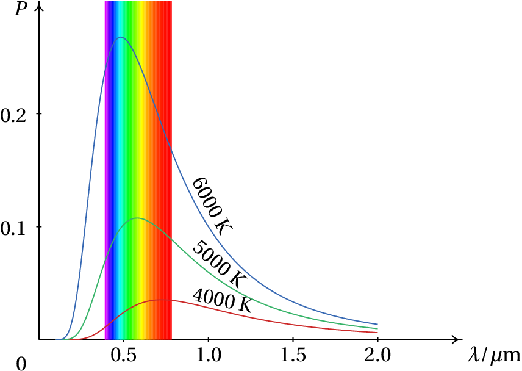

Um corpo negro é um objeto ideal que deixa sair toda a radiação produzida pela agitação térmica das moléculas.
Existe um valor do comprimento de onda em que a potencia da radiação emitida é máxima. Esse valor do comprimento de onda é inversamente proporcional à temperatura.
aplicando o teorema de equipartição da energia, obtém-se que devería ser emitida mais radiação com comprimentos de onda baixos, independentemente da temperatura.